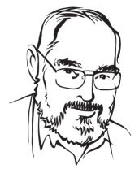

Vamos a zambullirnos en esta pseudociencia. El diseño inteligente, en primer lugar, no es considerado por la ciencia por razones bien escuetas, no presenta evidencias ni hace predicciones que conduzcan a experimentos verificables que sustenten su afirmación principal que reza: “los sistemas físicos y biológicos que observamos en el Universo son el resultado del diseño intencional de un creador inteligente”.
Un creador inteligente. La evolución, decididamente, no es inteligente y ocurre gracias a varios elementos que surgen y se desarrollan de sus propios resultados, sin propósito alguno más que la supervivencia del organismo y la prosperidad de sus genes. Bien lo expresó el popular astrónomo Carl Sagan con aquella frase que casi todos conocemos bien: Afirmaciones extraordinarias requieren siempre de evidencia extraordinaria. Hasta el momento, las evidencias apuntan hacia la evolución biológica. La idea de un creador inteligente sólo trae nuevas y absurdas preguntas. ¿De dónde vino este ser?, ¿dónde está?, ¿cómo fue hecho y por quién?, ¿hay otros como él?, ¿por qué no hace evidente su existencia?…
¿Cómo sobrevive, entonces, el diseño inteligente?
Si aún sobreviven las religiones, el diseño inteligente es la mejor medicina en estos tiempos modernos. Aparte de que teorías como la tierra plana y hueca, la astrología, la homeopatía y la cienciología, para nombrar algunas, calan en el cerebro humano como lotería en neuronas apostadoras, este nuevo fraude apunta a los creyentes que desean “pruebas”, y sin son científicas, pues mucho mejor. Pero no lo son. Precisamente por ello, los científicos se han unido al coro de personas que intentan enseñar un poco sobre la evolución a los no científicos, porque el diseño inteligente engatusa a numerosas personas debido a la ignorancia que persiste en cuanto a la evolución y la mala información que rodea a la ciencia. Más allá de algunos ateos y agnósticos interesados en refutar esta insana idea, los científicos están viendo ahora la necesidad de involucrarse en ello; no hay ningún tipo de evidencia científica que la sustente, por ende, los sistemas educativos no deben enseñarla como ciencia. De hecho, sus postulados carecen de lógica, todos rodeando la idea de que existe un creador inteligente detrás del universo, tratando siempre de corroborarla con cada vez más y más intricados inventos.
Biólogos y filósofos nos dicen que el diseño inteligente se revela como un fraude tan hábilmente construido que es algo así como la ilusión del mago que distrae y desvía la atención de la audiencia (la que está dispuesta a creer) al tiempo que oculta la naturaleza del engaño. Y los resultados no son menos que “milagrosos” ya que, como un mago, hace aparentemente plausible un evento imposible. De hecho, es la definición misma de un milagro, ¿cómo tomarlo en serio? Sin evidencias que la sustenten, toda afirmación permanece sin fundamentos, más aún, el diseño inteligente no hace predicciones que conduzcan a experimentos verificables y esa es la única forma de confirmar o negar sus conclusiones.
“El diseño inteligente no es más que el creacionismo con un esmoquin barato”, dijo Leonard Krishtalka, director del Instituto de Biodiversidad y profesor de Ecología y Biología Evolutiva en la Universidad de Kansas.
Pero las diferencias son enormes. El creacionismo está mucho más cerca de las religiones. Ciertamente, el diseño inteligente no proclama que la tierra tiene 10,000 años, sus trucos son mucho más elusivos. Pero tomemos primero la resistencia científica, eso que ayuda a la ciencia a progresar, cualquier idea nueva se encontrará con fuerte oposición por parte de sus colegas. La confirmación experimental es sumamente importante cuando se desea avanzar una idea y esa confirmación debe ser obtenida por otros equipos científicos, es bastante complicado porque se busca objetividad entre los cerebros de una raza mayormente subjetiva, el resultado ha sido el método científico. Más allá de los científicos, sin embargo, encontramos otra resistencia, que en su mayoría está basada en una creencia nacida de la tradición, una idea que ha sido refutada con información sustentada por pruebas; de repente, las filosofías pasadas cambian pero las personas que aún creen en ellas no están preparadas para cambiar también.
Ninguna especie comienza su recorrido sabiendo. Pasan de la ignorancia al conocimiento a través de la curiosidad, el descubrimiento, la aplicación y el tiempo, sólo así progresan. No obstante, ese progreso significa también dejar a un lado lo que se pensaba o integrarlo, si es posible, al nuevo conocimiento. Pero hay obstáculos, grandes obstáculos que se interponen; dinero y poder son dos elementos claves que llevan a la promoción de la ignorancia para mantener la creencia viva, de hecho, creer en sí se convierte en una necesidad y los resultados lo vemos a nuestro alrededor, sazonados en su propia cultura. El pasado forja el presente, eso es indudable, la diferencia está en la capacidad de aprendizaje; cuando el individuo aprende en vez de aceptar, cambia en vez de estancarse y exige evidencias para tomar decisiones, podemos entonces hablar de desarrollo en sus habilidades superiores.
El diseño inteligente es un atentado fallido hacia esa sabiduría. Toman el camino que saben es el correcto, la evolución, y la salpican con su propia agenda: el creador inteligente. El problema principal radica, indudablemente, en que no presentan pruebas sobre su existencia. Desde ahí, la manufacturación comienza y en su sutil receta de ambivalencia y confusión, la interpretación y la especulación son sus características. Los del diseño inteligente suelen hablar de cinco grandes fases que Donald E. Simanek del departamento de filosofía de la Universidad Lock Haven en Pennsylvania ha recogido de la siguiente forma: Estructuras complejas, Organismos bien adaptados a sus funciones, Complejidad irreducible, Improbabilidad y Diseño que requiere de diseñador.
Examinémoslas un poco.
El tiempo, uno de los grandes problemas de la especie. Somos incapaces de ver más allá de tres, a lo mejor, cuatro generaciones; es altamente posible que no aprendamos del pasado y nuestros cerebros suelen pensar que las cosas deben de ocurrir en nuestro tiempo de vida. Eso de millones de años es difícil de asimilar, de hecho, los creacionistas dicen que esta roca de 4,600 millones de años ¡sólo tiene 10,000! Eso se llama ser extravagantemente desquiciado. Pero los diseñadores inteligentes no niegan el tiempo, ni que los organismos se desarrollaron de lo simple a lo complejo, pero niegan rotundamente que esa progresión haya ocurrido gracias a leyes naturales, ellos aseguran que esos mecanismos que llevan de lo simple a lo complejo fueron creados por un diseñador. El problema es que no han podido nombrar, aunque sea uno, que no se demuestre haya evolucionado a través de leyes naturales. De hecho, el creador es de bajo rendimiento, completamente subrealizado. Comenzó con el ojo, el sistema inmunológico, el ser humano; las explicaciones científicas sobre la evolución de estos sistemas complejos lo han dejado con el diseño de un simple flagelo y una ratonera. La realidad es que lo único que parece complejamente irreducible es el propio diseñador, todo lo demás es explicado por la ciencia.
Esta oscura piscina donde habita la complejidad irreducible nos lleva a las viejas falacias de Michael Behe, para muchos, una terrible pérdida de tiempo que persiste a pesar de no tener ningún tipo de prueba a su favor. La idea se centra en la identificación de organismos con características importantes, que, si se pierden, condenan a la especie a la extinción. Una característica que no podría, aseguran, evolucionar de forma natural. Hasta la fecha, no hay pruebas.

“Behe no ha podido convencer a nadie con sus ejemplos y ha tenido que recurrir a la idea de que la falta de evidencia fósil es la responsable de que no observemos ‘ciertos pasos en ciertas progresiones evolutivas’. Pero, en mi opinión, todas esas palabras son un completo desperdicio ya que sólo nos distraen del vacío fundamental de la hipótesis de un ‘diseñador’”, explica Simanek.
El argumento de la improbabilidad, por otro lado, trae ejemplos absurdos como el de los automóviles de Henry Morris, que asegura que es imposible que procesos evolutivos biológicos formen un automóvil; no obstante, es la ignorancia que produce el planteamiento mismo donde radica el problema.
“Los creacionistas creen que un ser humano no puede surgir de la evolución natural. Eso no es más que una caricatura de los procesos de evolución. Los cálculos de probabilidad creacionistas son notoriamente fraudulentos pues sólo consideran la probabilidad entre diversas partes que se ensamblan. En física y química, sin embargo, las cosas son diferentes. Hay fuerzas que actúan entre las partículas y las estructuras, además, hay que tener en cuenta las leyes de interacción y la energía ya que aumentan en gran medida las probabilidades de que lo simple genere estructuras estables de mayor complejidad. Más aún, eso ayuda a garantizar que estas estructuras estables persistan en su forma y función”, escribe Simanek.
No sólo eso, algunos argumentos de refutación hacia el diseño inteligente aseguran que la evolución biológica sí creó un automóvil y lo hizo naturalmente, a través de la producción del extraordinario cerebro humano, capaz de crear cosas más complejas que un coche.
Los defensores del diseño también proclaman que hay un diseñador detrás de la buena y apropiada adaptación. Esta noción explica lo natural como algo sobrenatural y nos dice que una especie bien adaptada ‘aprendió’ sobre esta adaptación gracias al diseñador, él lo hizo posible garantizando mecanismos que todavía desconocemos. Sin embargo, los defensores de estos conceptos no explican por qué el diseñador tuvo que crear tantas especies que luego se extinguieron, como los dinosaurios.
“Si los creacionistas rechazan la noción de que todas las especies están vinculadas, deben concluir que los dinosaurios no tenían descendientes. Entonces, ¿cuál era su función en el gran escenario de las cosas?, más aún, ¿cuál es el propósito de todo el largo proceso de evolución?”.
La joya de esta propuesta es el diseñador, aunque nadie aún sepa cuál es su gran propósito. Muchos acusan a la evolución de ser producto de probabilidad fortuita, sin embargo, la falta de conocimiento en la ciencia, mayormente, es responsable de estas fallas.
“Las mutaciones son fortuitas en el sentido, únicamente, de que no son producidas por una anticipación a lo necesario. La selección natural es cualquier cosa menos aleatoria. La selección natural no es un proceso guiado por un poder superior sino simplemente por cuáles genes sobreviven y cuáles no”, expresó el biólogo y autor Richard Dawkins en una entrevista. “Es realmente difícil saber por qué hay personas inteligentes, educadas en la evolución, que deciden seguir caminos religiosos. Me parece que es una traición a la ciencia. Esas personas tienen una agenda religiosa que, por razones que a lo mejor sólo ellos saben, elevan por encima de la ciencia”.

En las mismas palabras de siempre, el diseño inteligente reitera sin evidencias que Dios lo hizo todo, incluyendo la evolución. Por supuesto, si en vez de Dios escribes el Monstruo de Espagueti Volador, recibes los mismos resultados, el mismo número de evidencias. Al buen entendedor… Ramen.
¿Qué tipo de inteligencia creó al diseñador inteligente?
Los rastros de la inexistencia
Para la lógica, el problema comienza y termina en el diseñador. ¿Cómo explicarlo? La deducción racional clama que se trata de una idea creada por el cerebro humano. Hemos visto cómo ha cambiado a través de los tiempos y culturas; realmente no tiene sentido pensar que pertenecemos a la religión ‘oficial’ y que las demás no cuentan; de la misma forma, es ridículo afirmar que mi dios particular es el verdadero. Precisamente por eso, muchas religiones aseguran que todos son el mismo. El problema es que este protector en los cielos sólo deja tras él rastros de inexistencia.
De hecho, una buena razón para rechazar al diseñador es el hecho de que sus acciones son inobservables, las nociones en el Diseño Inteligente carecen de experimentos directos y la respuesta que solemos obtener de sus defensores es que en el futuro podría descubrirse un mecanismo que confirme sus creencias; en principio, existe siempre esa posibilidad.
Mi madre no llegó al ateísmo a través de la ciencia. “Sólo hay que mirar el estado del mundo para saber que ningún dios existe”, dice. De la misma forma, sólo hay que analizar la idea del diseñador para destruir sus castillos de naipes. No obstante, obviemos la ausencia total de evidencias a su favor y todo lo que vemos en su contra a nuestro alrededor, imaginemos, entonces, que existe este creador, este diseñador inteligente que nos regaló la capacidad de adaptación y creó la posibilidad de hacer lo simple, complejo. Preguntémonos entonces, ¿qué inteligencia creó al diseñador?, ¿qué inteligencia creó al creador del diseñador? y ¿cuáles han sido sus propósitos?
Si estamos averiguando y descubriendo de qué está hecho el universo, es normal que nos hagamos las mismas preguntas si nuestra explicación inicia en los planes y propósitos de un diseñador. Si la ciencia sospechara que es posible descubrir las partículas de lo conforman, los científicos estarían trabajando en el asunto. Pero encontramos muchas definiciones de dios, depende de dónde estemos buscando, para las religiones cristianas se trata del creador, la Biblia dice que es incambiable y eterno, sin un punto de origen; en el Islam, dios es el único que puede juzgar en todo el universo y algunos le agregan decenas de atributos; en el judaísmo hay un solo Dios creador con el que los judíos pueden establecer una relación personal. Para ellos, dios sigue trabajando en el mundo y todo lo que hace afecta a la gente. Muchos de los cristianos que conozco también lo piensan así, por supuesto, las religiones cristianas surgen del judaísmo. Los judíos, sin embargo, no reconocen a Jesús.
La naturaleza del creador deja mucho que desear. Especialmente si andas en busca de respuestas científicas, resultados observables y experimentos demostrables.
“Dios es incorpóreo y eterno, no tiene sexo pues no es humano, no tiene punto de origen ni de final, es eterno y no hay más. Las religiones lo nombran de forma distinta pero es sólo uno, el dios de todos”, expresa María Ignacia Córdoba, cristiana de la nueva era, dice ser; le pregunté si las religiones, entonces, eran todas irrelevantes y decidió que lo eran.
Aún así, no sabemos de qué está hecho el creador. Aunque un ser de esa calaña, que anda en movimiento y hace cosas que nos afectan, sería posible de rastrear de alguna forma y analizar qué tipo de partículas lo forman. “Dios es más inteligente de lo que jamás serás. Él no permitirá que nadie lo vea”.
¿Es eso inteligencia? ¿Negarse a ayudar a su creación?
La única respuesta racional es que no existe. Es una idea creada por nuestros cerebros que se ha convertido en el meme de Dawkins y continúa creando horrores en el planeta. Lo maravilloso se lo atribuyen a él, lo horrible a sus planes misteriosos o al diablo (igual de inexplicable e inexistente).
“A menudo y confianzudamente se ha afirmado que el origen del hombre no puede ser conocido, sin embargo, la ignorancia engendra confianza con más frecuencia que el conocimiento: son aquellos que saben poco, y no los que saben mucho, los que afirman tan positivamente que este o aquel problema nunca será resuelto por la ciencia”, escribió Charles Darwin.
Para mí, este problema hace mucho que ya fue resuelto por la ciencia.
Volver al índice de la Lupa Herética
© 2008-2023 Glenys Álvarez y Sin Dioses. Prohibida la reproducción con fines comerciales.
Comentarios
Comments powered by Disqus